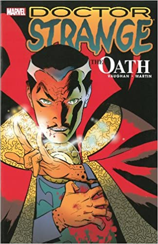

Cronologia Doutor Estranho
Lembrando que isto é apenas uma recomendação de leitura.
Várias das obras aqui citadas não correspondem a ordem de lançamento ou tempo cronológico.
Isso é apenas uma recomendação para entender melhor o personagem!

- Strange Tales #110-#146
- Marvel Premiere #9-#14
- Doutor Estranho #59-#62
- Doctor Strangee Dr. Doom: Triumph and Torment
- Era Roy Thomas & Gene Colan
- Doctor Strange: Sorcerer Supreme
- Doctor Strange: The Oath
- Doctor Strange: The Way of The Weird